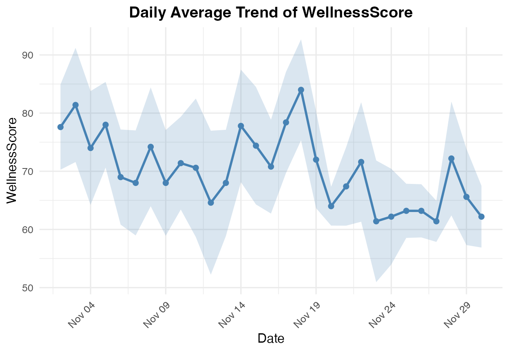

WellnessData.Rmd
library(healthsimulation)## Loading required package: tidyverse## ── Attaching core tidyverse packages ──────────────────────── tidyverse 2.0.0 ──
## ✔ dplyr 1.1.4 ✔ readr 2.1.5
## ✔ forcats 1.0.0 ✔ stringr 1.5.1
## ✔ ggplot2 3.5.2 ✔ tibble 3.3.0
## ✔ lubridate 1.9.4 ✔ tidyr 1.3.1
## ✔ purrr 1.0.4
## ── Conflicts ────────────────────────────────────────── tidyverse_conflicts() ──
## ✖ dplyr::filter() masks stats::filter()
## ✖ dplyr::lag() masks stats::lag()
## ℹ Use the conflicted package (<http://conflicted.r-lib.org/>) to force all conflicts to become errors
## Loading required package: R6
##
## Loading required package: corrplot
##
## corrplot 0.92 loaded
##
## Loading required package: viridis
##
## Loading required package: viridisLite
##
## Loading required package: ggwordcloud
# Initialize a new WellnessData object with a specific seed
wd <- WellnessData$new(seed = 123)## WellnessData object initialized with seed: 123
# Generate the dataset
wd$generate_data(n_participants = 5, n_days = 30, save_csv = TRUE)## Data generation complete. Dataset dimensions: 145 x 9## Data saved to: WellnessSensors.csv
# Print a summary
wd$print()## WellnessData Dataset Summary
## ===========================
## Period : 2023-11-02 to 2023-11-30
## Participants: 5
## Rows : 145
## Variables : 9
##
## ActivityLevel AvgHeartRate SleepHours WorkHours
## Min. :1.500 Min. :62.00 Min. :5.200 Min. : 5.300
## 1st Qu.:2.700 1st Qu.:69.00 1st Qu.:6.400 1st Qu.: 7.300
## Median :3.200 Median :72.00 Median :6.800 Median : 7.900
## Mean :3.182 Mean :71.21 Mean :6.787 Mean : 7.989
## 3rd Qu.:3.700 3rd Qu.:73.00 3rd Qu.:7.200 3rd Qu.: 8.600
## Max. :5.000 Max. :80.00 Max. :8.600 Max. :11.300
## WellnessScore
## Min. :46.00
## 1st Qu.:62.00
## Median :68.00
## Mean :70.23
## 3rd Qu.:78.00
## Max. :97.00
# Create beautiful plots
library(patchwork) # For arranging plots
# Individual participant time series
p1 <- wd$plot_participant_timeseries("P01")
print(p1)
# Correlation matrix (requires GGally)
p2 <- wd$plot_correlation_matrix()## Registered S3 method overwritten by 'GGally':
## method from
## +.gg ggplot2
print(p2)
# WellnessScore trend with confidence interval
p3 <- wd$plot_metric_trend("WellnessScore", ribbon = TRUE)
print(p3)
# Temperature distribution
p4 <- wd$plot_temperature_distribution()
print(p4)
# Arrange multiple plots together (if patchwork is installed)
if(requireNamespace("patchwork", quietly = TRUE)) {
(p3 + p4) / p1 + plot_layout(heights = c(1, 2))
}